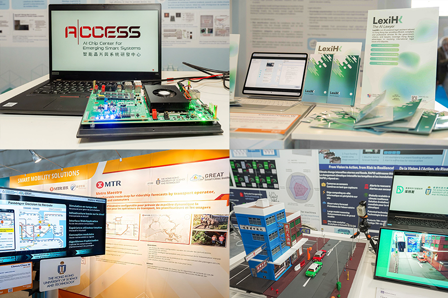
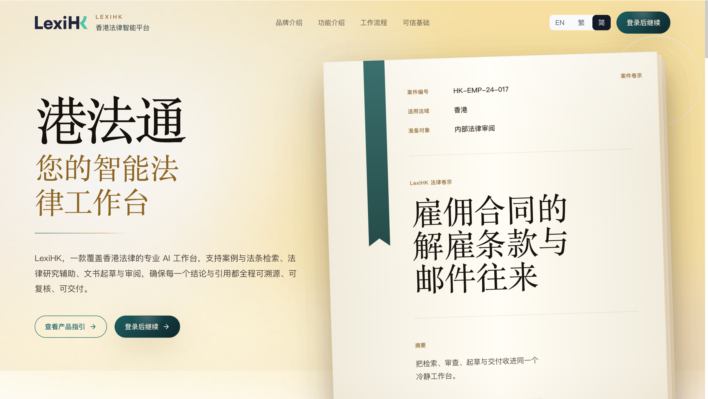

LexiHK received a bronze medal at the 50th International Exhibition of Inventions Geneva in April 2025. The legal AI project was among the inventions contributing to HKUST’s record achievement of 38 awards across 37 participating teams.

LexiHK Legal AI Assistance received a bronze medal at the 50th International Exhibition of Inventions Geneva, held in Switzerland from 9 to 13 April 2025. The award formed part of HKUST’s strongest performance at the exhibition to date.
Across the University, 37 participating teams secured 38 awards, including two special prizes and 22 gold medals, seven of which received the congratulations of the jury. The results spanned healthcare, artificial intelligence, data science, advanced manufacturing, energy and aerospace engineering.

Legal AI for Hong Kong
The system combines a proprietary model and legal database with large language models, natural language processing and knowledge graphs.
Its legal knowledge retrieval, contract evaluation and judgment prediction modules are designed for Hong Kong’s common-law framework and local legislation. The project aims to support legal practice, education, research and access to justice, connecting specialised AI development with the needs of the local legal ecosystem.
Research translation on an international stage
The exhibition brought together nearly 1,050 inventions from approximately 35 countries and regions, including 299 entries from Hong Kong. It provided an international setting for presenting research applications to inventors, universities, institutions and companies.
HKUST’s announcement highlighted the contribution of interdisciplinary research and collaboration with government and industry to its results. Nearly 40 per cent of the University’s exhibited inventions applied AI. Projects from its InnoHK centres, including the Hong Kong Generative AI Research and Development Center, were also represented.

For LexiHK, the bronze medal marks a milestone in the development of legal AI tailored to Hong Kong. It places the project within the University’s broader efforts to translate research into applications addressing professional and societal needs.
Official announcement
HKUST Achieves Record-Breaking Results at 50th International Exhibition of Inventions Geneva, 13 April 2025.
All events and news